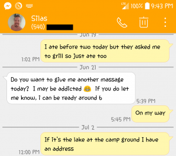
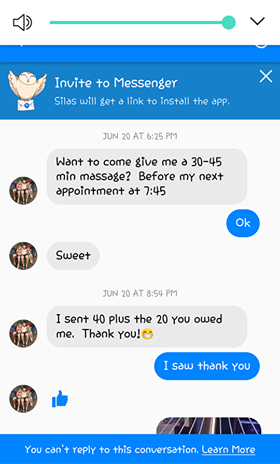
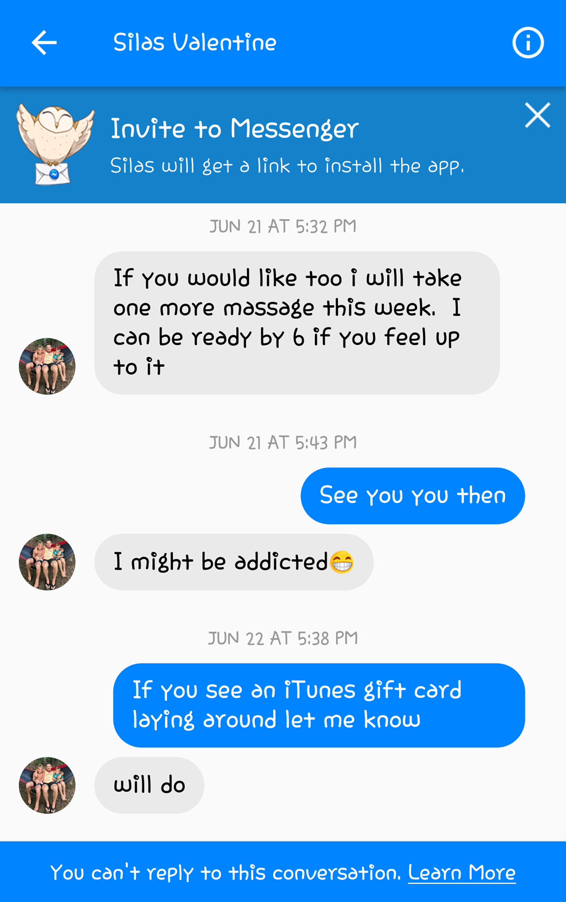

Dear friends and family in Christ,
It’s come to a place where I need to make a post about some things that have happened in my circle of friends and life. These are things I really wish I didn’t have to write, but here we are. I have to make some public warnings and corrections... It may come off as me being a heresy hunter to some, but none of this was stuff I hunted for... It happened right in front of me, and among close friends and ministry associates.
This person is Silas Valentine.
I have spoken with him personally, and confronted him directly with another person, directly confronting him about his strange teachings and abusive behavior. He denies the behavior, but defends the teachings. Today, you will see evidence of both.
I am bringing it public, not to shame Silas, or to hurt him in any way, but only because I don’t want anyone else being manipulated or abused. Up until this point I had only been sharing these things privately. But, several friends have recommended that I make a public statement. Honestly, the stuff is so out of whack, we have considered supporting some of these whom he has abused to take Silas to court. Yes, there is actual ABUSE that has happened, not just weird teachings, but actual sexual manipulation and abuse...
Our buddy, Daniel van Deutekom, from Europe has been kind enough to do many interviews for us, collecting them into this blog along with his personal story including several of the abused/manipulated people’s personal stories as well. These are not mere baseless accusations. These are experiences from individuals which include as many actual pictures, videos, and evidence as we still have access to, so people can see for themselves... I also want to note that these are the tories of JUST SOME of the abused, some are still not ready to tell their story...
Silas taught in Fort Wayne on several occasions, and I had known him closely as a friend. This has not been a quick or rash thing to do. For me personally it has been a year of talking with individuals and seeing as much legit evidence as I could before I would bring something like this up. And, honestly, one of the most abused persons in this particular situation is from our community here in Fort Wayne, so I was provoked to stand up for her.
It is the stuff of cults. It is classic deception and spiritual abuse at its worst. We have reached out to Silas and his wife, and they seem content to live this lifestyle. If they reached out to me and wanted help in any way, I would be ready to extend any love and support at a moments notice, especially to help them get out of this lifestyle and to move forward in Jesus... so far none of that has happened, despite multiple attempts and direct conversations with them.
I am now doing something I’ve never done before. I’m publicly warning people to avoid Silas’s teaching and influence completely, and to be careful of being alone with him, because he has dangerously manipulated people with his words into doing all sorts of sexual acts, or moving into what he calls “freedom in Christ.”
I want to issue a warning against the poisonous teachings that I believe led Silas to the place he is in his mind...
Namely the concepts of:
Beyond these, any teaching that downplays the value of monogamy and the glorious marriage bed and emphasizes strange sexuality is just poisonous and unhealthy! Jesus has so much more than this in His definition of unconditional love and grace! Jesus is so truly pure and safe! He is not like that strange, manipulative stuff!!!
If anyone has been hurt by this, my wife and I would love to talk and offer support. If anyone needs clarity, I’m open. I know many have been confused and hurt.
I have been dealing with these strange distortions of Grace for the last couple years especially, so you may notice me correcting this stuff in my teachings and posts. Unfortunately, I’ve seen dozens of people’s lives significantly affected by these strange teachings, so that may give you some insight into when you read my posts or hear my messages regarding these subjects. My heart is SO FOR childlike purity and a pure drink of Jesus’ Grace for all!!!
I love you guys, and I thank you in advance for your grace in dealing with all of this. And, if you are closely involved with the Valentine’s or others entrenched in this stuff...please, bless them and don’t treat them as our enemies. We are all still family. But, family also speaks up and offers loving correction at times, even to the point of public warning if poisonous stuff and abuse continues to be released.
Please read Daniel’s blog, as well as the comments from other ministers, like John Crowder and Jared Gustafson who are calling this stuff out along with us...
An introduction
Hi, I’m Daniël from the Netherlands. I’m not your next-door heresy-hunter. In fact, I myself have been called a heretic, false teacher/prophet and other typical heresy-hunter names. Many people have spread lies and false accusations against me, often knowingly. One former friend spread a very long post full of lies, caricatures and strawman-arguments amongst his 25,000+ thousand following. He basically told them that I had gone astray and was teaching my audience that “we can throw away the Bible”, that “God loves sin and welcomes it into heaven”, that “we can just go on with sinning”, etc. All these lies were spread about me, only because I stood ground for the gospel of grace! Many doors of opportunity have closed since then, and I’ve lost multiple important sponsors (I’m a full-time minister). Many still deem me as ‘unsaveable’. I’m not saying all of this to reap sympathy, but so you know I’m not speaking from a place of ignorance. So hopefully - while you’re reading my summary of the situation - you’ll realize that I’m not out on bashing people over the head with “the truth”, but because I’m concerned for the people I love, Silas and his following included.
I’ve been following Silas on Facebook for the past two years, and listened to a couple of his teachings. I knew he preached grace and inclusion and that drew my attention. Earlier this year, I was invited for an event with Silas here in the Netherlands. So - me being an inclusion-guy - I decided to go. I wasn’t the only one in my surroundings: some of my friends were really stoked about this event, including my brother. When Matt Spinks - a friend of my brother - noticed that my brother was interested in this event, he told him to be aware around Silas. Because I was planning to go alongside my brother, he sent me what Matt had send him. As I read the message, I felt distress. I was used to false accusations coming from grumpy christians. I wasn’t used to a grace preachers saying these kind of stuff about another grace preacher. So, there were two possibilities: either Matt was wrong, and his claims were wrong and/or made-up, or Matt was right and Silas was doing things he shouldn’t do. However you put it, one side was obviously in error, so I decided to do some research, so I could discover the truth.
I decided to reach out to Matt personally, in order to check the validity of his claims. Matt connected me to people who’ve been connected to Silas’ ministry. From the moment I got informed about the rumours surrounding Silas, I hoped that Matt somehow was exaggerating and that it omehow was one big misunderstanding. Sadly, that hope turned out to be futile, as I started conversing with individuals who told me their negative experiences with Silas, which they often backed up with evidence. As time passed, I began to notice that it was needed to bundle these experiences. I was actually amazed that nobody had done that until now. So out of servitude to and love for the body of Christ, I decided to bundle them. For the rest of this blog, I’ll share those stories and the evidence to back it up. But first, I think it is important to get a hold of the thing Silas is preaching that is bringing unintentioned havoc.
Underneath a post from January the 14th, 2018, Silas commented with a video in which he said the following things concerning marriage:
“Paul said in Galatians: ‘He who’s in the spirit is no longer under the law.’ That’s what marriage is. [It’s the law] (...) I’m not against your morality or your marriage or your religious system of beliefs. I’m not against those things. They’re just illusions. You can carry on in them, that’s fine.”
According to Silas, marriage - because of its covenantal nature - is “the law”. I’m just wondering... Is “the new covenant” Jesus gave us also legalistic? Of course not. A covenant isn’t per say legalistic, if it’s build on promises and relationship, instead of demands and rules. So to assume that marriage is something “of the law”, just because it can have legalistic expressions in negative examples feels like saying christianity is rotten to the core just because certain christian leaders have messed things up in the past. Both arguments are based upon generalisation and are therefore both strawman-arguments.
Silas also quotes Jesus, saying “In the days of the Kingdom you’re neither married nor given in marriage”, and goes on by suggesting that grace preachers are hypocritical when they preach the Kingdom, while still preaching marriage, because Silas believes that Christ said that the Kingdom will manifest on earth through the absence of marriage. What Christ in fact said - in Matthew 22:30 - is that people won’t marry nor be given in marriage after the resurrection. By far, most christians believe that the resurrection is either something to occur in the future or in the afterlife, but - let’s assume - that the resurrection has already taken place, even then we can’t automatically conclude that Jesus spoke of the abolition of marriage. Context is essential. The Sadducees questioned Jesus about marriage and specifically about marriage according to the Jewish law, which states that you need to automatically marry the wife of your brother if he dies, without the woman having any say in it. Some scholars that believe that this verse is applicable to nowadays, have said that Jesus didn’t speak about the abolition of covenantal marriage, but about the abolition of legalistic, enforced marriage. By the way, if what Silas says about marriage is true, why then did both Jesus and the apostles clearly state that marriage is a covenant between two people?
Silas believes that marriage is purely societal construct, a societal law: “I just want to clearly articulate to you guys that these things (marriage) aren’t ‘God-given’ or ‘God-orchestrated’ in any way, shape or form. They were completely human arguments.”
I’m wondering then, why Paul said the following: "For this reason a man will leave his father and mother and be united to his wife, and the two will become one flesh." This is a profound mystery— but I am talking about Christ and the church.” - Ephesians 5:31-32. If there’s nothing special to marriage, and it isn’t a covenant between two people, reserved for only those two people, why then does Paul seem to say that there’s something divine about marriage?
Silas goes on by saying: “You can’t fall out of love, nor can you be any closer to the person you’re with, whether you’re married or not, because union is union. You cannot separate one from one, it’s just impossible. So when we begin to realize that we’re one, and we begin to wake up to the reality of this union, all of a sudden we realize: ‘Man, maybe we don’t need marriage. Maybe marriage is just an excuse or whatever.’ (...) And as soon as we get married, what that marriage comes with is a bunch of restrictions, restrains and a social contract. I mean marriage is in and of itself just a legal document. You get that legal document. You get that social construct, that social contract, that says ‘I can and cannot do these things, and these are the things I can do. These are the things that are acceptable, these are the things that aren’t acceptable.’ Guess what: If you live under law, you always gonna feel in some sort of shame and you’re always gonna feel in some way that you’re not accepted. And you’re always gonna look for that acceptance. (...) When you’re no longer under law and you’re just living in spirit, you’re living in love, you’re living in life, guess what’s happening? Freedom, baby! Freedom!”
Click here for the video: https://www.dailymotion.com/video/x6new82
I can somewhat go along with what Silas is saying here, although I fear that “the bunch of restrictions” that he doesn’t like about marriage, includes keeping marriage bed sacred and pure. I do agree with his belief that the essence of union isn’t in the marriage-contract. “The two will become one flesh” suggests that the true reality of marriage doesn’t start with the vows and autographs, but with the wedding night, defloration and the breaking of the hymen. The cross of calvary is an image of this (or vice versa), where the blood is poured out to seal the covenant, and the veil of the Holiest of Holies - which prevented intimacy with God - was torn. So you can make a case for the idea that marriage isn’t in its core about the legal contract, nor about the vows, but about physical unity. But sadly this idea has very often been abused to talk immorality right. And sadly, that’s what we see happening with Silas.
By this time I think it’s good to give a short summary of the allegations. You can read about all the details and the evidence to back it up further down this blog. Every name in this blog has been changed due to privacy reasons, except of course mine, Silas’ and Matt Spinks’. It’s important to know that all these stories come from alumni from Silas’ school Ekstasis Culture (formerly called: Ekstasis Institute of the Spirit). I should also mention that these people aren’t bitter. They’ve received good things through Silas’ ministry, but most of them say that Silas in the past two years isn’t the one he used to be. Most of them actually spoke from a place of compassion for Silas and his students.
Now it’s time to share the full testimonies and to show the evidence that prove the validity of those stories. We follow the pattern of the six different allegations, as written down in the previous section of this blog.
Many years ago, Sasha was at a house sale when she loved the house she was examining so much, that she asked God to let somebody glorious live inside that house who would throw “glory parties”. Years later, during summer of 2015, she received an invitation to a glory party. The location? That exact same house. At that meeting, Silas was preaching on immortality. Because it seemed like such a divine appointment, she drunk in every word he said. Sasha felt really blessed and felt the freedom to correct Silas on one statement he had made that she didn’t agree with. He admitted to be wrong, so because of Silas’ shown humility, Sasha started to trust him.
During fall of 2016, she joined Silas’ Ekstasis Culture (online) school. During that time, she met George - who was also a student of Silas - and became best-friends with him. After a while, she even moved to Virginia to spent more time with Silas in order to learn more from him. Soon after, she partnered with Silas and helped him for a while with some classes. Silas made some promises concerning a bootcamp before she moved to Virginia, which he didn’t keep. During spring of 2017, Silas told Sasha that she couldn’t participate in the mentorship program, “because George wasn't mature enough to handle Sasha's presence". He didn’t give her any explanation whatsoever, although he had promised Sasha she could participate. She even moved to Virginia to participate. The weird thing was: somebody else - who wasn't even part of the year-long course - could suddenly participate that mentorship program, where she was rejected. Looking back, Sasha believes that Silas drove a wedge between her and George and between her and the group, because she had too much influence. He feared losing control over the group, because she was smart and was a threat to Silas’ intellectual monopoly.
Just before she moved to Virginia, Silas asked Sasha to give him a massage in his hotel room. She didn’t know beforehand that he wouldn’t have any clothes on. She discovered that when she arrived. He soothed her by saying that "it’s freedom. We’re naked and unashamed. We’re just like kids." After the massage, he asked her to wash his back while he was taking a shower. Since that day, he repeatedly make jokes about that experience with nudity. He would often sent Sasha pictures of him taking shower, but slowly yet steadily those “jokes” began to take on quite serious forms. He started with pictures of just his face, but soon he also sent videos of himself being naked and dancing in the shower. Multiple times he sent pornographic videos, and twice a week he video-called her over Messenger while he was in the shower, and very often he displayed more than just his face. Facebook has deleted those pornographic videos, because their algorithms have flagged those nudity pictures, as is their policy. Luckily (or unluckily), their algorithms spared some footage, which you can see in this photo down below (Silas' private parts are in the photo), and in this video (WARNING: LEWD CONTENT): Silas Valentine taking a shower.
Sasha feels like Silas wanted her to get used to him being naked around her. When she moved to Virginia, he would often ask her to give him a massage. He paid for the massages, and since Sasha was a professional massagist, she didn’t expect anything bad from it. At first, he would ask her once a week for a massage, but steadily it increased to twice a week and even more than that. (In the next couple of screenshots you can see that Sasha gives Silas a massage two days in a row. That can hardly be due to “sore muscles”.) One thing she noticed was that the door of the house - these massages were always at Silas’ house - was always closed and that his wife was never at home. Over time, the massages got more intense. He began to ask her to "loosen sore muscles in the groin-area", so she did. And that’s when he said: “You’ve been everywhere but my penis, it’s also just a muscle. You don’t need to be afraid of a penis.” By this time, he had encouraged her to violate her natural instinct and to ignore her consciousness, under the guise of “breaking free of fear”.
According to Sasha’s testimony, she was asked at least four times to “massage” his penis. The first time was at the middle of June 2017, and it went on till the beginning of July. She felt that the ‘penis-massages’ became more intense over time. During the ‘massages’, he would start groaning because of upcoming orgasms. One time, while he was about to have an orgasm, Sasha stopped. He teased her by calling her nicknames. At that moment, everything clicked for Sasha. She had many bad experiences with manipulative individuals, who always started to tease her when they wanted her to get their way done. Silas asked: “Why don’t you go all the way? Why do you tease me by stopping right before the climax?” Sasha responded with: “I’m not here to go all the way.” So Silas accused her of being afraid of an orgasm: “It’s a natural thing. You shouldn’t fear it.” Sasha told him: “I don’t think [your wife] would like this...” Suddenly, Silas snapped at her and said: “Beth and I are two different people. I do a lot of things Beth wouldn’t like.” Sasha specifically remembers that he said “wouldn’t like” and not “doesn’t like”, indicating that Silas’ wife isn’t aware of a lot of things he does. And that’s why Silas always shut the door, when Sasha was there to give him a massage. Doesn’t that contradict his own philosophy of being free from fear and shame?
After this incident, Sasha felt very disturbed. Her heart told her that something was completely wrong. During that week, she noticed another lady who had accused Silas of doing similar things, but nobody believed her, because she didn’t have any evidence to back it up. That’s why Sasha decided to try to gather some evidence during the next session. That session would be the last one, because she tried to record what Silas said, but he noticed it and lost trust in her. For the first time during their sessions, Silas’ wife announced that she would come home early. So Silas panicked, took a shower of twenty seconds, got clothed, and kicked Sasha out of the house.
Because of this, she stopped going to class, although she kept participating in the online sessions, even though she lived less than a mile away. She just didn’t want to be in his presence. Since this moment onward, he called her up and said: “I love you”. Sasha would only respond with a simple “thanks”, to which Silas turned mad, because she didn’t return the “I love you”, as was the habit during their earlier conversations. The more she refused to say it, the more he said “I love you” and the like. Normally he would say it once per call, but because she didn’t return the “I love you”, he said it numerous times per call. He had lost control of her and tried to regain it in this way and in others. Sasha told me that it was a heartbreaking experience: “I went all the way down there to learn from this person and I began to trust him, only to discover that he wanted to abuse me.”
Sasha told me that she doesn’t know where that humble person went that she met in the summer of 2015. Once, she trusted Silas, because he was open to rebuke and correction, but - according to Sasha - that Silas is gone. She says that she loves Silas and that she therefore hopes that he will open his heart again for correction and restoration.
We’ve also received a recording of a class in which running naked around a campfire is glorified as the best counseling method. You will hear Silas telling his students that it is healthy and liberating to be naked. On a personal note, I’ve encountered this theory before. I once co-led a glory youth group. God did amazing and crazy miracles at our meetings. But in secret, my best friend at the time and co-leader decided that it was a good plan to mentor two young girls aged 15 years. Without us knowing about it, he met with them in his room and eventually encouraged them to undress in front of him. Why did he ask that? Because these girls were insecure about their appearance. So he thought: “If they show themselves to me ‘in their full glory’, I can tell them that they’re beautiful, and they won’t have to be insecure any longer.” Luckily it didn’t go that far. Who knows that might have happened next? Long story short, it did come to light and me and the rest of the leadership decided to confront him in private, together with an external mediator and mentor.
He was further than us in the supernatural, the seer realm, grace and the finished work, but one thing he lacked: humility to be confronted and to admit his faults. Luckily, the Lord showed mercy and gave him a dream the day before the confrontation in which God told him that He wanted to give him a second chance. During the meeting, he admitted that he was wrong. From that moment his restoration process started. I recognize lots of Silas’ tactics from my own experience. They are being used for power abuse and tearing down one’s healthy and necessary boundaries.
Check the recording here: http://bit.ly/SilasCampfire
Near the end you can hear the wife of Silas confronting him on “wanting to be naked all the time”. There’s too much truth in that ‘joke’ for Silas, so an awkwards silence follows and in the end he laughs it away. I think this reveals a lot about the unhealthy environment Silas has created.
Meghan has known Silas for over 7 years. She was a student of him since before he started his school Ekstasis Culture. During februari of 2017, she and Silas stayed at a friends house. Meghan was coming out of the bathroom, on her way to her bedroom. In the hallway, Silas - who was laying in bed in another bedroom, one with the door open - called out to Meghan and asked: “Do you want to give me a blowjob?” She responded by saying in a very sarcastic way: "Silas, you know I would, but I honor your wife too much." He didn’t say anything else after that. She at first thought it was a joke, but later on began to doubt about that.
Meghan told me that it hurt really bad that Silas asked her to give him a blowjob, even if it truly were just a joke.
Because she was raped structurally from ages 5 till 12, kidnapped and raped when she was 22 and date raped 4 years ago -
and Silas knew all of this - it felt like a stab in the back from Silas.
After this experience, she warned multiple friends who were connected to Silas. One of them confronted Silas on it, yet he denied the charges. Soon after, she got out of Ekstasis Culture. Behind her back, Silas began to warn for her among his students, but carefully and one-on-one. He told them that Meghan was “too fat and ugly” for him to want that from her, that she was a liar, that she didn’t have cancer, that she was never raped, and that she had munchausen. “Those who’ve gotten out have told me this, like Sasha and Lois. He turned a lot of my friends against me to discredit me, so my allegations would be ‘proven’ false. He makes me and Sasha - cause he did the same thing to her - look crazy, and puts himself as the one telling the truth. I was suicidal before I left, and now I’m not. I was friends with Silas’ wife for years. She’s brainwashed. Silas is abusive. Not physically that I know of, but emotionally and spiritually.”
At least 5 marriages have broken up because of his teachings, that we know of. Later on, we will discuss how two of these marriages got split through Silas’ teachings. Meghan told me that she was involved with polyamory while she was under Silas’ teachings, and right after. She says that she doesn't even want to have sex until she is married, (before Ekstasis she was like that. She had only slept with her ex-husband) but Silas convinced her that "it is about doing what pleases you", and that's why she thought: "Well, I guess I should have lots of sex then..."
Meghan told me that she removed every chat history off of her phone and Messenger, because she went through a time in which she didn’t want to be confronted with anything that has to do with Silas, because she felt betrayed.
John, together with his wife Rachel, joined the school during fall of 2015. John told me that his marriage split up in winter of 2016 (divorced summer 2017), primarily due to Silas’ teachings. Initially they were both hesitant to believe the things being taught, but eventually the idea crept in and had heart-wrenching consequences. They grew very emotionally distant yet he still wanted to work things out, though she was unwilling. John: “She just didn’t honor marriage anymore.” He recalls her saying on a facebook comment: “Silas teachings saved me from marriage.” John told me that he believes that the marriage probably would have survived if it weren’t for Silas’ teachings. In Summer of 2017, John had a conversation with another student, Cynthia, about something that had happened between her and Silas. During one of Silas’ trips, Cynthia decided to go to Silas’ hotel room for personal advice. When he asked her to have sex with him, she said: “You look too tired for that.” So she just gave him a blowjob. She showed him a picture of a naked Silas with his penis in erection too.
When Cynthia told him about all of this, she felt very conflicted in herself and she was wondering if she should tell Silas’ wife about what had occured. John was still very caught up in Silas’ teachings at the time, so he told her that “that’s between you and Silas. It’s up to you, but he should probably tell her.” In August of 2017, John decided to call Silas and asked him: “Is what Cynthia told me true?” Silas told him that it didn’t happen. When John told Silas that he had seen his pornographic selfie, Silas admitted that it was true and told him “that my counseling sessions are a lot different than other counseling sessions.” In that same conversation, John told Silas that he was no longer going to be a part of Ekstasis Culture. What should be noted, is that Cynthia had a very sexualized mindset, because of bad sexual experiences in the past. Silas justified his sexualized counseling methods by saying that he was trying to normalize sexuality in order to help her get rid of her “overly sexualized” mindset. In my point of view, you don’t help someone with a sexualized mindset by stimulating sexual senses. That only makes it worse.
After John left, he went through a season of detoxification. In January of 2018 he decided to call Cynthia, hoping that she could be convinced of the dangers of Silas’ teachings. He shared with her his experiences of being free from his teachings. She seemed quite receptive. Later on, in April, John called her and mentioned to Cynthia her sexual experiences with Silas. He asked her whether she had talked with Silas’ wife about those experiences. John was shocked when Cynthia denied that it even had happened. John: “It’s sad. She’s had a really rough past in many ways including sexually. She is grasping for love and acceptance. And such people are the people Silas takes advantage of and manipulates.”
Steve was a student of Silas from 2013 till 2016. Steve told me how he had been blessed by Silas’ teachings in the past - when the focus was all on the finished work of the cross - but that something shifted during summer of 2015. For years straight, Silas had been full of glory and faith, according to Steve, but during that summer slowly, yet steadily, “the glorious vibe around Silas changed.” Steve planned to participate in the next year of school, but because of this change, this shift of focus, he changed his plan, and ‘15/’16 became his last year. Silas started to talk more and more in riddles. The distance between Silas and his students grew. According to Steve, it started to feel like another gospel. One time, Steve tried to have a conversation with Silas about a dream that he intended to pursue. Silas told him: “God won't bless your plans, because you haven't given enough money to my ministry.”
What should be noted, is that Silas didn’t ask money for his schools. Everybody was free to join and students were encouraged to sow into Silas, but he didn’t demand a fee. Steve recalls Silas warning him in 2014: “If I start charging for my classes, you have every reason not to listen to me.” Silas started charging in 2016.
Steve told me that it turned real cultish real quick in 2015. He describes Silas’ attitude as: “I’m the one who knows the stuff. I’m the leader.” He also notes that Silas used to apologize, but in later years he doesn’t do that any longer. The other former students of Silas I spoke with nearly all spontaneously confirmed this. Steve told me that he loves Silas and has been blessed a lot through his ministry, but doesn’t know where that Silas went. He hopes - like every other former student I spoke with - that Silas will be restored back to the old Silas, and would allow others to speak into his life again. They don’t want retribution. They want restoration.
This is not the first blog that addresses the issue. Somebody who also had bad experiences with Ekstasis Culture wrote two blogs about how it’s turning quickly into a cult:
I myself have had several encounters with followers of Silas who behaved in a cultish manner. In one such occasion, one of his followers even told me that he thinks that Silas is further in spirituality than Paul. The screenshots are in Dutch, but with Google Translate you can validate this claim. He also said that Silas completely ignores allegations, because Silas believes that “the ego needs to defend itself.” Although Paul and Stephen in the book of Acts defended themselves against certain allegations, somehow you’re more spiritual when you stay silent and laugh confrontations away. Paul and Stephen didn’t know that, but luckily Silas knows that, and Paul will probably affirm these words, up in the cloud of Witnesses. These are not my words. This is basically what one of his followers told me. It’s sad, but he turned into the guru, and we see the exact same patterns of behavior as in a rising cult, and I believe that that’s what we’re dealing with here.
I believe that the following verse perfectly sums up what's wrong with Ekstasis Culture: "For they mouth empty, boastful words and, by appealing to the lustful desires of the flesh, they entice people who are just escaping from those who live in error. They promise them freedom, while they themselves are slaves of depravity—for “people are slaves to whatever has mastered them.” (2nd Peter 2:18-19)
Silas impresses his audience with complicated words and by boasting how he has overcome "the flesh". When his audience is convinced of his 'authority as a teacher', he "entices people who are just escaping from those who live in error" (those who flee legalism). He "promises them freedom" (as we've seen earlier on, in the first video of this blog), "while he himself is a slave of depravity".
I wholeheartedly hope that justice will win in this situation, both for the victims as for the perpetrator, because I believe that Silas is - to a lesser extent - also a victim: a victim of his own behavior, unhealthy teachings and isolation. Because I've faith in restoration for all, I fully believe that releasing these testimonies and facts at this moment is the right thing to do.
I do not know Silas Valentine personally, having only met him on a couple of occasions. However, I can fully vouch for the sincerity and pastoral heart of Matt Spinks in spending an enormous amount of time and care looking into the details of this tragic situation with a pure motive of love: wanting not to falsely accuse, but moreover to protect innocent ones from abuse and deception. Matt has approached Silas numerous times, both personally and with others to address this issue.
To equate marriage with “law” is a gross misrepresentation of the holy sacrament (a sacrament - not a mere covenant - between one man and woman, instituted as a blueprint for mankind in this world in Genesis and fully realized in the New Covenant. Marriage is a visible representation of the grace of God: a picture of Christ and the church which is to be kept sacred). There is no room for “innovative revelations” for sex outside the marriage bed. These perverted teachings have clearly been used to justify extensive sexual immorality in clear defiance of scripture and the Spirit of Christ. Damage has been done to homes. It is plain evidence of a radical misunderstanding of “grace” which teaches us not to “overcome your fears and give me a blowjob,” but instead “teaches us to say ‘no’ to ungodliness“ (Titus 2:12)
In fact this is a sick, cultic misrepresentation of “grace” that stands contrary to a vast corpus of New Testament writings (see below). Silas is preying among the vulnerable and mistakes the grace of God for licentiousness. I do not have an extensive knowledge of all Silas’ teachings outside this issue, and people have no doubt been blessed through his ministry in other matters before this derailment. However, this derailment is a massive one. I am led to weigh in partly because a number of people over the years have mistakenly assumed a connection between our ministries, often reporting that Silas has packaged many of my teachings as his own personal insights and regularly imitates ministry style. Thus without any apology, I strongly warn anyone in the words of the apostle Paul not to associate with such a sexually immoral man claiming to be a Christian brother, “with such a man do not even eat” (1 Cor. 5:9-11). Such a one is a predator, and Paul says to relate with him as you would an unbeliever - not as a teacher to sit under. Are these harsh words?
Silas does not exceed the apostle Paul in revelation, but rather has plunged into the error of Roman Gnosticism. He apparently has also confused New Testament morality guidelines with “law.” Though marriage may not exist in the afterlife, it is clearly the blessed, God-ordained sacrament for sexual relations in this world. We pray for his wife and children who are also victims here, and of course for his own personal restoration - however no restoration to Christian ministry will occur if he refuses to submit to mutual accountability and work through these issues in humility and teachability.
I have included the following verses for your consideration: